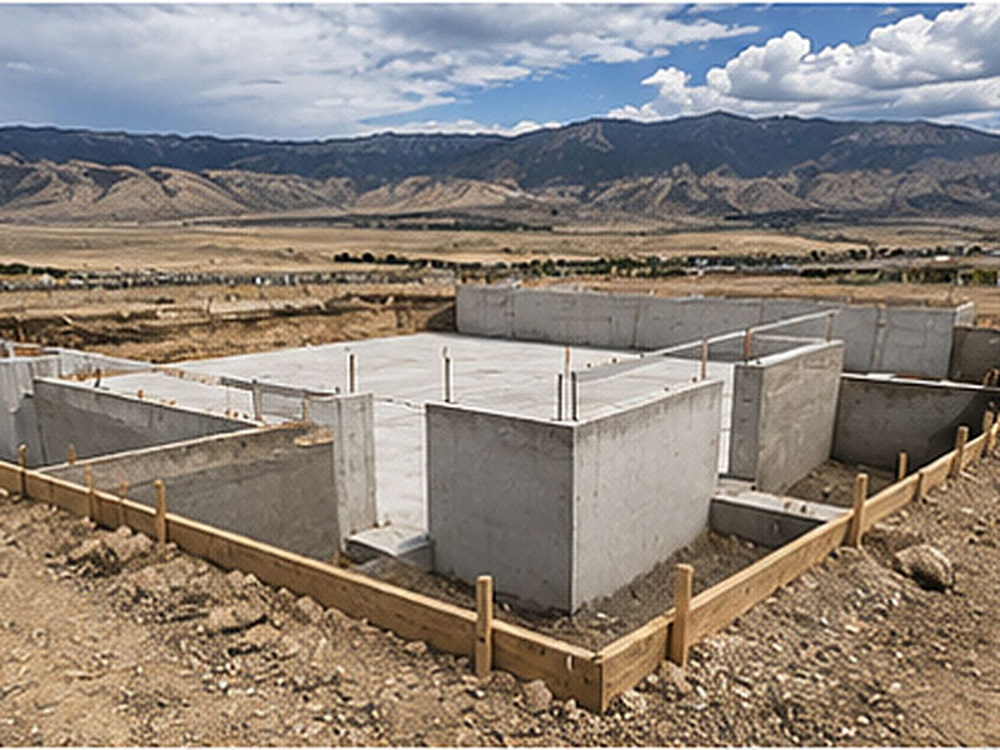

Foundations & footings
Footings, stem walls and foundation slabs poured square, level and to code — for additions, garages, sheds and new construction across the valley.

Everything built on top of a foundation depends on it being poured right. A footing or stem wall that's out of level or out of square creates problems that follow the whole project, while a solid, code-built foundation gives the structure above it decades of stable support.
We pour foundations for the steady stream of new construction, additions, garages and outbuildings going up across the Tooele Valley, working from your plans and the local frost and soil requirements.
We handle the full range of residential foundation work: spread footings that carry the load down to stable ground, stem walls that bring the foundation up to grade, and monolithic or slab-on-grade pours where the footing and floor go in together. Each gets the reinforcement, dimensions and detailing the plans and code call for.
Whether you're a builder who needs a reliable concrete crew or a homeowner managing your own project, we work from your plans and coordinate around your schedule. Clear communication on dimensions, elevations and timing keeps the foundation on track so the rest of the build isn't waiting on us.
Foundations are inspected for good reason, and we pour to pass. That means correct footing depth and width, proper rebar placement, accurate dimensions and the details inspectors look for. We coordinate our pours around the required inspections so the project keeps moving without rework.
Adding on to a home, or putting up a detached garage, shop or large shed, all start with the right foundation. We tie new footings into existing structures where needed and pour clean, accurate foundations for standalone builds, sized and reinforced for what's going on top.
Foundation pricing depends on the design, the dimensions, how much excavation and reinforcement the plans require, and site conditions like access and soil. Timeline depends on inspections and weather. We give you a written estimate from your plans and a realistic schedule, and we flag anything that could affect either before we start.
Common questions
Yes. We pour footings, stem walls and foundation slabs for new residential construction, additions, garages, shops and outbuildings throughout the Tooele Valley, working from your plans and the local code requirements.
We do. Foundation work has required inspection points, and we schedule our pours around them and build to the standards inspectors check so the project passes and keeps moving. We're used to working within that process.
Footings have to reach below the local frost line so the foundation isn't lifted by freezing ground — a real concern in our climate. The exact depth comes from local code and your plans, and we pour to meet it. We'll confirm the requirement for your specific project.
Yes. For the right structures, a monolithic pour that combines the footing and floor slab in one is efficient and effective. We'll let you know whether it suits your build or whether a footing-and-stem-wall foundation is the better approach.
That's how we prefer to work. We pour to the dimensions, elevations, reinforcement and details on your engineered or builder's plans, and coordinate with your schedule. Accurate plans make for an accurate foundation.
Related work
Slabs for the garages and shops your foundation supports.
Flatwork and structural pours for valley businesses.
Finish the project with a driveway built to match.
Free, no pressure
Call or text for the fastest answer — most estimates are scheduled within a day.
(385) 469-5163